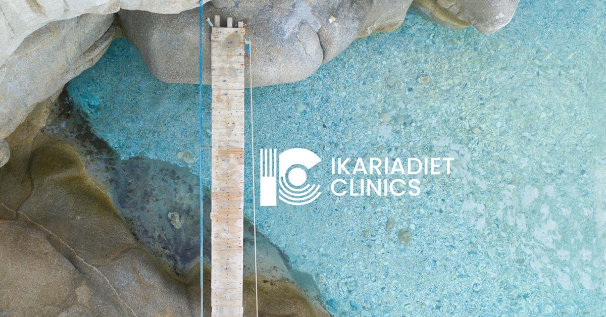

Ikarian Diet Clinics and NOUS experiential Stores collaboration

Nikolas Drakatos and we united our expertise last year under NOUS Experiential
Stores roof with a common belief: we deem that, nowadays, it appears as
though the modern business has been engineered to isolate humanity
from one another. For that reason, we wanted to differentiate ourselves
and add human value to NOUS in-store experiences, especially to our cautious
and sceptic guests, due to the Covid-19 situation. So, we concentrated on
offering the unique Ikarian Diet Clinics in an application for our retail
customers. In that way, we wanted to build on the strength of human connection
while offering a great chance to produce social and economic value.
Indeed, we loved the idea to surprise our consumers in a physical retail
environment by supporting healthy nutrition and strengthening the immune
system of our guests. Thus, our team of nutrition and gastronomy experts
reimagined this historic diet in 2020, creating a contemporary version of
the Ikarian Diet that may be implemented internationally, wherever in the
world. This diet helps weight loss, increases energy levels, strengthens
the immune system, and promotes lifespan.
Every person is unique and should be treated as such. Our team of
registered dietitians and nutritionists recognizes this and is here to
provide guidance and advice to every customer individually, assisting
and observing every step of their progress Ikarian people mainly through
diet, but also through their daily routine found the key to longevity,
while having physical and mental well-being. It is now up to us to
recognize their value, learn from them and apply these teachings to
the modern way of life. Our approach concerns the application of the
Ikarian nutrition with ease in any place in the world, through appropriate
guidance and support. Healthy body weight, health protection and
psychological well-being are invaluable gifts and there are no barriers
to gaining them.